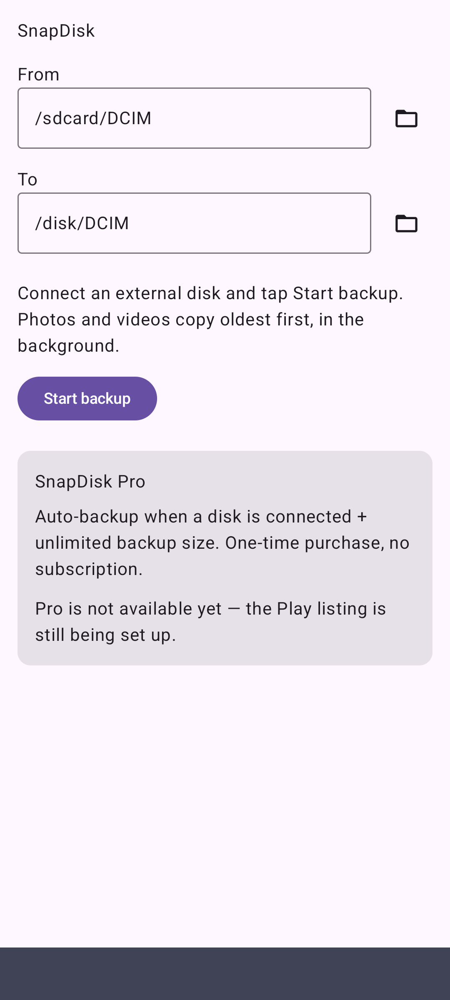

TL;DR: A photo someone sends you on Viber is not in your gallery until you put it there. Viber has a setting for it — More, Settings, Media, “Save to gallery” (older versions: Media and Storage) — and with it on, every photo you receive is saved to the gallery in an album called “Viber Images”, at sdcard/Viber/media/Viber Images on internal storage, with videos in a sibling Viber Videos folder. From there the backup is the easy half: SnapDisk's default run reads Android's media index with no folder filter, and a photo the gallery shows is a photo the default run sees — so plug in the drive, tap Backup, and the Viber photos copy along with everything else, no computer. The honest limits, up front: the setting is not retroactive — photos received before you turned it on stay in the chat until you save them one by one — and when the setting is off, received photos sit only in Viber's temporary cache, in a hidden folder reported as .viber or .viber media, which the default run cannot see at all. Whether SnapDisk's From folder picker can open that hidden cache folder directly is unverified — the picker opens with no folder pre-selected, the system picker hides dot-folders, and the code has no Viber path handling — so this article does not claim it; the joined workflow is the route that is proven to work. The exact cache path is unverified too — the guides disagree on the name — and so is how long a cached photo survives. As of November 24, 2026, no top search result offers a dedicated Viber-photos-to-USB how-to: the results are Viber's own Google Drive cloud backup, recovery guides for deleted photos, and generic OTG copy guides that never mention Viber.
The wall: Viber keeps your photos in the chat — until you save them out
Start with where a Viber photo actually lives, because it decides everything else about this job. When someone sends you a photo on Viber, it arrives in the chat — and, by itself, that is where it stays. Viber does not put received photos in your gallery on its own. It keeps them in its own storage, inside the app, and the only thing that moves a photo out of the chat and into the gallery is a setting you have to turn on yourself: “Save to gallery”, under More, Settings, Media — on older versions the screen is called Media and Storage. With that setting on, every photo you receive from then on is saved to the gallery automatically, in an album called “Viber Images”. With it off, nothing is saved anywhere you can reach — the photo lives in Viber's cache, and the gallery never sees it. That is the wall: not a locked folder hiding the photo from backup apps, but a switch that was never flipped, plus the fact that the switch does not work backwards.
The two halves of that wall are worth separating, because they decide which method below you need. The first half is the setting itself. The guides agree on the shape of it without exception: open Viber, tap More at the bottom, go to Settings, then Media (or Media and Storage on older versions), and enable “Save to gallery”. One guide adds a step the others do not mention — restart Viber after turning it on, so the setting takes effect — and it is cheap enough to do either way. From that moment on, photos sent to you are saved on the phone in the folder “Viber Images”, at sdcard/Viber/media/Viber Images on internal storage; videos land in a sibling folder, Viber Videos. The second half is the retroactivity — or rather, the lack of it. Turning the setting on does not save the photos you already received. The guides describe the auto-save as applying to photos sent to you after the setting is on, and none of them claims it backfills your chat history. A photo from last month is still sitting in the chat, unsaved, and the only way to get it out is to open it and save it by hand — tap the photo, tap Share, tap “Save to Gallery” — which is Method 2 below. So the job splits in two by date: everything from now on is automatic, everything from before is manual, and the backup only works once the photos are in the gallery either way.
One more scope fact, because it decides what SnapDisk can and cannot do here — and it is the good news in this article, the opposite of the WhatsApp status case. SnapDisk's default run reads the phone's media index, MediaStore, with no folder filter: it queries the images and videos tables and copies everything it finds, oldest-first. A Viber photo that has been saved to the gallery is an ordinary indexed file — it shows in the gallery as the “Viber Images” album, and gallery apps read the media index, so a photo the gallery shows is a photo the default run sees. That is the whole difference from a hidden cache folder: the Viber Images folder is a normal folder with no .nomedia file in it — if there were one, the album would not appear in the gallery at all — and the default run picks it up with no folder to pick and no step to remember. The rest of this article is built around that fact: the work is getting the photos into the gallery, and once they are there the backup is the one-tap job SnapDisk already does. The only photos the default run cannot see are the ones still sitting in Viber's hidden cache with the setting off — and the next sections say exactly how to get those out too.
And a word on whose photos these are, because it matters before any method below. The photos this article covers are the ones people sent you — family photos in a group chat, pictures a friend forwarded, the images that pile up in a Viber conversation over months. Saving them to your own drive for yourself is the job. Re-posting someone else's photo, or sharing it onward as if it were yours, is a different act, and the same courtesy applies here as anywhere: ask the person who sent it before the photo leaves your phone for anywhere else. This article's methods copy the file to your drive; what you do with it afterwards is yours to decide, and asking is the honest step before anything leaves your phone.
What the search results actually offer
Search for this job three ways and the results split into three shapes, none of them the narrow job — a Viber-photos-to-USB guide that starts from a photo in a Viber chat on an Android phone, states the “Save to gallery” setting and the Viber Images folder, and copies the photo to a plain USB drive plugged into the phone, no computer. The first shape is our own site, and it is the closest of the three — but only for photos in general. Search “back up Viber photos to USB drive Android no computer” and the top results are our own generic USB photo backup pages — usb-photo-backup.html and transfer-photos-to-usb-automatically.html — which explain the USB copy thoroughly and never mention Viber at all. The rest of that first search is Viber's own cloud backup: a guide to Viber's Google Drive backup and a Facebook post walking through the same cloud backup, both of which back your chats up to Google Drive and neither of which puts a single photo on a USB drive. The only other result is a PC phone-transfer tool, MobileTrans, which moves Viber chats between phones through a computer. None of them joins the Viber photo to the drive.
The second shape is the generic OTG guide, and it is the other half of the job — but it never names Viber. Search “transfer Viber photos to USB stick OTG Android” and the results are YouTube tutorials and written guides on moving photos from an Android phone to a USB drive with an OTG adapter — plug the drive in, open the file manager, select the photos, copy them to the drive. They are correct as far as they go, and the manual copy they describe is Method 2's second half. But none of them says where a Viber photo lives, none of them mentions the “Save to gallery” setting, and none of them warns you that with the setting off there is no photo in the gallery to select at all. A guide that tells you to select your Viber photos in the file manager assumes they are already saved — and for most Viber users, they are not. The third shape is the fact-check result, and it is where the folder itself is confirmed: bestim, itoolab, Coolmuster, and ik4 all agree that with “Save to gallery” on, received photos land in sdcard/Viber/media/Viber Images and appear in the gallery as the “Viber Images” album, that the setting lives under More, Settings, Media (older: Media and Storage), and that with it off the photos sit temporarily in a hidden cache folder reported as .viber or .viber media. What none of those pages does is take the USB step: they stop at the gallery. So the gap stands, but only on the narrow angle: the Viber photo, out of the chat and into the gallery, onto a USB drive plugged into the phone, no computer, with the setting and the folder stated and the cache question marked honestly. That is the angle this article is written on — and Viber is the one major messaging app missing from our messaging-app series: WhatsApp, Telegram, Instagram, Facebook, Snapchat, TikTok, and WeChat all have their own photos-to-USB article already, and Viber does not.
What you need
An Android phone — Android 7.0 or later, which is SnapDisk's minimum version — with Viber installed and the photos already received, plus one USB drive your phone can read: a USB-C flash drive, or a regular USB drive with a USB-C OTG adapter. SnapDisk itself is installed from the v0.1.2 APK — it is not on Google Play yet — so install it by allowing “install unknown apps” for the browser or Files app you download it with, which is standard Android. You need nothing else for the main route: no file manager with hidden files, no extra app, no account. The “Save to gallery” setting is inside Viber itself, and the backup is SnapDisk's default run. Check the drive's space first: Viber photos are small — a photo is a few megabytes — so space is almost never the problem here, but look anyway, because a whole-library default run copies everything, not just Viber. One format note: drives formatted FAT32 cannot hold a single file over 4 GB. That only matters for very long videos — SnapDisk skips those files and lists them instead of failing the whole backup. A drive formatted exFAT has no such limit, and exFAT is the format to use for a photo drive.
Before any method, settle the one question that decides whether the phone route works at all: does your phone see the USB drive? Plug the drive in and open Settings > Connected devices or Settings > Storage — the drive should appear there. That check is the test, and it takes ten seconds. If the drive does not appear, try a different adapter first — cheap OTG adapters are the usual failure — then a different drive, and a powered hub if the drive is a spinning hard drive rather than a flash drive. And one warning up front, because it applies to every route below: do not delete anything from the phone until the USB copy is done and verified. The photos in the chat are Viber's copy, and the photos in the gallery are yours — but until the drive copy is checked, the gallery is the only copy outside the chat, and deleting from the gallery before the check is how a photo ends up nowhere at all.
Method 1: Turn on “Save to gallery”, then back up with SnapDisk
This is the route to use, because it is the only one that joins the whole job — the Viber photo, out of the chat and into the gallery, onto a USB drive plugged into the phone, no computer — using only the apps already on the phone plus SnapDisk. It has two halves, and they have to happen in order: the Viber setting, which makes the photos visible to every backup that reads the media index, and the SnapDisk copy, which puts them on the drive. The first half is the save. The second half is the backup. Skipping the first half is the mistake this article exists to prevent: running SnapDisk's default backup with the setting off copies every photo in the gallery — and zero Viber photos, because from the media index's point of view there are no Viber photos to copy.
- Turn on “Save to gallery” in Viber. Open Viber, tap More at the bottom of the home screen, then Settings, then Media — on older versions the screen is called Media and Storage — and enable “Save to gallery”. One guide says to restart Viber after turning it on so the setting takes effect; do that, it costs nothing. From now on, every photo you receive is saved to the gallery automatically, in the “Viber Images” album. Videos go to a sibling album, “Viber Videos”.
- Check the album appeared. Open your gallery app, go to Albums, and look for “Viber Images”. If it is there, the setting works — and this is also the check that proves the default run will see the photos, because the gallery and SnapDisk read the same media index. If the album is not there yet, no new photo has arrived since you turned the setting on: ask someone to send you a photo, or save one by hand as in Method 2, and look again. If the album still does not appear after a new photo arrives, check that Viber has storage permission — without it, Viber cannot write to the gallery at all.
- Plug in the drive and run SnapDisk. Plug the USB drive into the phone. SnapDisk offers the backup in a notification — tap Backup — or open the app and tap Start. The run copies oldest-first, verifies every file by size after copying, and shows progress with Pause and Stop in the notification. The free run covers up to 5 GB, and Viber photos are small, so one run is almost always enough for the Viber half — though a whole-library run copies everything else too, and that is the point: the Viber photos come along with the rest, with no folder to pick and no step to remember.
- Or point the From picker at the Viber folder. If you would rather copy just the Viber photos and nothing else, open SnapDisk, tap the From folder picker, and navigate to the Viber folder — internal storage, Viber, media, Viber Images — and tap Backup. The run copies only that folder, oldest-first, and the same 5 GB free cap applies. This is the route when the library is large and you only care about Viber: the default run would copy everything, and the picker run copies just the album.
Two honest limits. First, the setting is not retroactive — photos received before you turned it on are still in the chat, unsaved, and Method 1 does nothing for them. That is Method 2's job, and it is a manual job: one tap per photo, or a batch selection in the chat. Second, the 5 GB free cap is per run — a Viber album will never reach it, but a whole-library default run might, and running it again picks up where it stopped, because files already copied are never copied twice. Third, SnapDisk copies, it never deletes: deleting the photos from the gallery after the check is always your step, never the app's — and deleting them from the chat is Viber's, not SnapDisk's, and it does not free the drive copy. The drive copy is the backup; the gallery copy is the original until you decide otherwise.

Copying only some Viber photos? If you would rather copy just a few photos than the whole album, the From folder picker still takes a folder, not single files — so copy the ones you want into their own folder first (in the file manager, or by saving them to the gallery and selecting them there), then point the picker at that folder. The picker route keeps only recognised photo and video extensions. If the drive is unplugged mid-copy, the backup pauses with the full error shown and resumes where it stopped when the drive is back. If a file is corrupt or too big for FAT32, it's retried once, then skipped with its reason listed — it never stalls the whole backup. The free version backs up manually, up to 5 GB per backup run, with no ads, no account, and no cloud. SnapDisk Pro is a one-time $9.99 purchase (no subscription) that starts the backup automatically when you plug in a disk and removes the size limit. The app has no internet permission, so your photos physically cannot leave your device.
And the check that matters for this article: after the run, compare the count against the album. A green backup that copied the whole library has still copied zero Viber photos if the setting was off — which is exactly what happens when the photos were never saved to the gallery in the first place. Open the drive and look for the Viber Images folder by name: the default run mirrors the source tree, so the album should be there as its own folder. If it is missing, the setting is the suspect, not the run — turn it on, wait for a new photo or save one by hand, and run again. SnapDisk copies, it never deletes — the only files it ever deletes are its own half-finished .part files — so deleting the originals after the check is always your step, never the app's.
Method 2: Save one photo by hand, then back it up
If the photo you want arrived before you turned the setting on — or you would rather not have Viber save everything automatically — the manual save does the same job one photo at a time. It is the route for the back catalogue: the photos already in your chats, which the setting will never save for you. Open the chat, tap the photo to open it full-screen, tap Share, and tap “Save to Gallery”. In a second the photo is saved — to the same “Viber Images” album, in the same folder, as if the setting had been on all along. From there it is Method 1's second half: the photo is an ordinary indexed file now, so the default run picks it up, or point the From picker at the Viber Images folder and copy just the album. The manual save is also the route when you want only some photos saved and not the whole firehose: leave the setting off, save the ones that matter, and the gallery holds only those.
The honest limits of this route are the ones that decide whether it is worth the taps. First, it is one photo at a time — there is no select-all-and-save in the chat, so a month of photos is a long evening of tapping, and a year of them is not a job to start by hand at all. If the back catalogue is large, the practical route is the file manager: with the setting on, new photos save themselves, and for the old ones, the cache route in the next section is the only bulk option — and it is unverified, which is why this article does not recommend it as the plan. Second, the manual save needs the photo to still be in the chat: if the message was deleted, or the chat was cleared, the photo is gone from Viber's side, and the only copy left is the cache — if it is still there. Third, the same clock that applies to every Viber photo applies here: a photo saved by hand is saved, and a photo left in the chat is not, and there is no deadline on it the way a WhatsApp status has one — but a chat you delete or a phone you replace ends the story just the same. Save the ones that matter now; the setting handles the rest from here on.
Method 3: Viber's Google Drive backup — and why it is not a USB backup
Viber has its own backup, and it is worth naming honestly, because it is the first result for every Viber backup search — and it is not this job. Open Viber, tap More, then Settings, then Account, then Viber backup, connect a Google Drive account, and Viber uploads your chats to Google Drive. Since a 2021 update, the backup can include photos and videos too, not just text. It is a real backup, and for the job of moving to a new phone it is the right tool: reinstall Viber, restore from Google Drive, and your chats — photos included — come back. That is what it is for, and it does it well.
But it is not a USB backup, and the difference is the shape of what you get back. The Google Drive backup stores your chats in Viber's backup format, on Google's servers, to be restored into Viber — it does not put plain photo files on a drive you can open anywhere. You cannot plug a USB drive into a computer and open the pictures from it, because the pictures are not there as pictures; they are inside Viber's backup, and the backup itself is hidden on Google Drive, not listed as files you can browse. The guides say the same thing in their own way: the backup files may be encrypted, and you should test a restore before you permanently delete your originals. And the backup needs a Google account, an internet connection, and Google Drive space — three things the USB route needs none of. So use Viber's backup for what it is: a restore point for Viber on a new phone. For plain photo files on a drive you can open anywhere, save the photos to the gallery first — Method 1 or Method 2 — and copy them to a USB drive with SnapDisk, no computer. The two backups are not rivals; they are different shapes, and this article is about the plain-files one.
Can SnapDisk read Viber's hidden cache directly?
This is the question the whole article turns on, and it deserves a straight answer in three parts — what the code proves it can do, what is unverified, and what would prove the rest. The first part is proven, from the code at the current base and from how Android's media index works — and it is the opposite of the WhatsApp status verdict, which is why the two articles give different methods. SnapDisk's default run reads the phone's media index — it queries the MediaStore images and videos tables, oldest-first by date taken, with no folder filter. A Viber photo saved to the gallery is an ordinary indexed file: it shows in the gallery as the “Viber Images” album, and gallery apps read the media index. The album's existence in the gallery is the evidence the folder is indexed — if Viber placed a .nomedia file in the Viber Images folder, the media scanner would skip it and the album would not appear in the gallery at all; it does appear, in every guide, so there is no such file. The query is in PhotoQuery.kt, the no-folder-filter shape is the code's own design, and the gallery evidence is the platform fact that closes the loop. So the default run sees Viber-saved photos, and it sees them with no step beyond the setting. That is not an assumption: it is the code's query shape plus the gallery evidence, stated as such.
The second part is unverified, and this article marks it as such rather than guessing in either direction: whether SnapDisk's From folder picker can open Viber's hidden cache folder directly. When “Save to gallery” is off, received photos sit only in Viber's temporary cache, in a hidden folder the guides report as .viber or .viber media — and the exact path is unverified too, because the guides disagree on the name, and no source gives a path this article can stand behind. The cache folder is the same hidden-folder class as WhatsApp's .Statuses: its name starts with a dot, which Android's media provider treats as hidden, so it never enters the media index, and the default run never sees it. Whether the From picker can open it is untested: the picker is the system's folder picker — ActivityResultContracts.OpenDocumentTree, in MainActivity.kt — and it opens with no folder pre-selected: there is no initial-folder hint anywhere in the code, and no Viber path handling anywhere in the app — zero matches for Viber or .viber in the whole source tree. The system picker hides dot-folders in its navigation, so a user tapping through to the cache would not see it to tap into. And whether picking a parent folder and relying on SnapDisk's recursive folder walk to descend into the cache would work is untested too — the walk recurses into every subfolder it can list, but whether the system's document provider returns a hidden dot-folder as a child is not something any test has checked. So the honest position is this: the direct pick of the cache is unverified — do not plan a backup around it, and do not assume it fails either. The joined workflow in Method 1 is the route that is proven to work, and it is the route this article gives.
The third part is what the code does prove about the rest of the job, so the limits above are not mistaken for a wider doubt. The manifest requests the media-read permissions (READ_MEDIA_IMAGES and READ_MEDIA_VIDEO, plus the older READ_EXTERNAL_STORAGE capped at Android 12), the notification permission, and foreground-service permissions — and no INTERNET permission at all, zero occurrences, so the photos physically cannot leave the device. It does not request all-files access — no MANAGE_EXTERNAL_STORAGE anywhere — which is the permission a file manager uses to browse another app's folders freely, and the absence is the reason SnapDisk cannot simply walk into Viber's cache the way a file manager can. The backup itself is the verified core: oldest-first by date taken with a date-modified fallback (PhotoQuery.kt), every file size-verified after copying (BackupEngine.kt), Pause and Stop in the notification (NotificationHelper.kt, BackupService.kt), files of 4 GB or more on a FAT32 drive skipped with their reason instead of stalling the job (BackupService.kt), and the free run capped at 5 GB with Pro a one-time $9.99 purchase (ProPrefs.kt). None of that changes the cache verdict — it bounds it. The backup engine is proven; the hidden cache is not its to read.
Photos you received vs photos you sent
The route is the same for both, but the starting point is not, and it is worth saying which one you are saving before you start. Photos you received — the case this article is really about — are the ones the setting governs: with “Save to gallery” on they land in the Viber Images album, and with it off they sit in the cache, and the methods above are written for them. Photos you sent are different, because you usually have a better original: a photo you sent is almost certainly still in your camera roll, in DCIM/Camera, at full quality, as an ordinary indexed file that SnapDisk's default run already covers. Back that up instead. The copy in the chat is a version Viber made for sending — smaller, compressed — and the original on your camera roll is the one worth keeping. The Viber route for a photo you sent is only needed when the original is gone — you deleted it from the camera roll, or it was a photo you took inside Viber and never saved — and then the chat copy is the only one left, and the manual save in Method 2 is how you get it out: open it in the chat, Share, “Save to Gallery”, and it lands in the album like any received photo.
One related corner is worth a line, because the guides mention it and it looks like a shortcut that is not one: Viber keeps contact profile pictures in its own app data, under Android/data and a viber.voip folder, and a guide describes digging there to copy a profile photo. That is a different thing from chat photos — profile pictures are the small images next to a contact's name, not the photos anyone sent you — and Android/data is guarded by scoped storage, so a file manager may not even show it. Do not go digging in Android/data for your Viber photos: they are not there. The chat photos are in the gallery once saved, or in the cache when they are not, and those are the only two places this article's methods touch.
Checking the drive after the copy
The check has two halves, and they have to happen in order: first that the save actually produced a file in the gallery, then that the drive holds it. After the SnapDisk run finishes, open the drive on a computer or on the phone itself and count: the drive should hold the Viber photos you saved, in a Viber Images folder of their own — the default run mirrors the source tree, so the album should be there by name — and a few opened at random should render fully, videos included. Open a Viber photo itself — not just any photo on the drive — because a run that covered the rest of the library would still look complete on a random check while the one album you cared about was missing. If the count is short, the run is not the first suspect — the setting is. Check the gallery: is the “Viber Images” album actually there, and does it hold the photos you expected? If the album is empty, the photos were never saved — turn the setting on, save the ones that matter by hand, and run again. If the album holds them and the drive does not, the run is the suspect, and the run needs repeating, not a different folder.
If the drive's free space ran out mid-run, the run stops with the full error shown; free space by moving the drive's contents to a bigger drive first, or back up to a second drive. If the run stopped at the 5 GB free cap — unlikely for a Viber album alone, possible on a whole-library default run — run it again and it picks up where it stopped, because files already copied are never copied twice. And the check that matters most for a photo that only existed inside a chat: confirm the drive copy before you delete anything from the phone. The copy in the gallery is an ordinary file and will survive; the copy in the chat depends on Viber keeping it, and a deleted chat or a replaced phone ends that. The drive is a plain folder of plain files. Anyone who picks up the drive can open them. That is the price of a copy you can open anywhere, and it is worth stating before the photos leave the phone.
What to avoid
- Assuming the default SnapDisk run covers Viber photos with the setting off. It cannot — proven from the code and the platform: the default run reads the media index, and unsaved Viber photos sit in a hidden cache folder that never enters it. A one-tap backup copies zero Viber photos until you save them to the gallery first.
- Assuming the setting saves the photos you already received. It does not — it is not retroactive. Photos from before you turned it on stay in the chat until you save them one by one, as in Method 2.
- Assuming the From picker can open Viber's hidden cache directly. Unverified — the picker opens with no folder pre-selected, the system picker hides dot-folders, and the code has no Viber path handling. Do not plan a backup around it; use the joined workflow in Method 1.
- Assuming you know the cache folder's exact path. Unverified — the guides report it as .viber or .viber media, and no source gives a path this article can stand behind. Do not go digging for it as the plan; save the photos to the gallery instead.
- Assuming the cached photo will still be there later. Unverified — the cache is a cache, not a save, and no source guarantees how long a photo stays there. Save the photos that matter now, while they are still in the chat.
- Looking in Android/data for your Viber photos. That folder holds Viber's app data, including contact profile pictures — not your chat photos — and scoped storage guards it. The chat photos are in the gallery once saved, or in the cache when they are not.
- Using Viber's Google Drive backup and thinking the USB job is done. The cloud backup is a restore point for Viber, not plain photo files on a drive. The USB leg is still SnapDisk's job — the cloud backup replaces nothing in this article.
- Using a PC phone-transfer tool and thinking no computer was involved. Tools like MobileTrans move Viber chats between phones through a computer. That is a different job with a different shape — this article's route needs no computer at all.
- Backing up the compressed chat copy when the original is still on the camera roll. A photo you sent is usually still in DCIM/Camera at full quality. Back the original up; the chat copy is the fallback for when the original is gone.
- Using a FAT32 drive for a library with long videos. FAT32 cannot hold a single file over 4 GB, and a library with long 4K clips will hold one. SnapDisk skips those files and lists them — use exFAT.
- Assuming the free 5 GB cap covers the whole library. It is per run. A library over 5 GB needs several free runs — run it again and it picks up where it stopped — or one $9.99 Pro purchase.
- Unplugging mid-copy. Pulling a USB drive out while files are still writing can corrupt the file in flight. Wait for the copy to finish, or pause it first — SnapDisk's Stop button exists for exactly this. An unplug mid-copy leaves a half-copied library that looks finished until you count it.
- Checking the drive by opening any photo. Open a Viber photo itself — not just any photo on the drive. A random check passes even when the one album you cared about was never copied, because the photos that did copy render fine.
Rule of thumb: Save it to the gallery first, then back it up — Viber keeps your photos in the chat until you tell it otherwise, and the gallery is the bridge to the drive. The setting handles everything from now on; the photos from before need one tap each.
On your phone instead
If you'd rather tap once than copy folders by hand, SnapDisk copies your photos to a USB drive — free, no ads, no account, no cloud, and your photos never leave the phone. You delete the originals yourself, after you check the copy. It copies your photos — the ones in your Gallery — oldest-first, with Pause and Stop and a size check on every file. For Viber it is the second half of the job: turn on “Save to gallery” first, then plug in the drive and tap Backup. See also: Back up WhatsApp photos to USB on Android, Back up Telegram photos to a USB drive, How to back up photos to a USB drive without uploading them, Transfer photos to a USB drive automatically (no manual copy), How to back up photos offline on Android — no cloud, no account, Back up screenshots to USB from Android, Restore photos from USB to Android, and SnapDisk vs VaultDrive: USB photo backup on Android, compared.